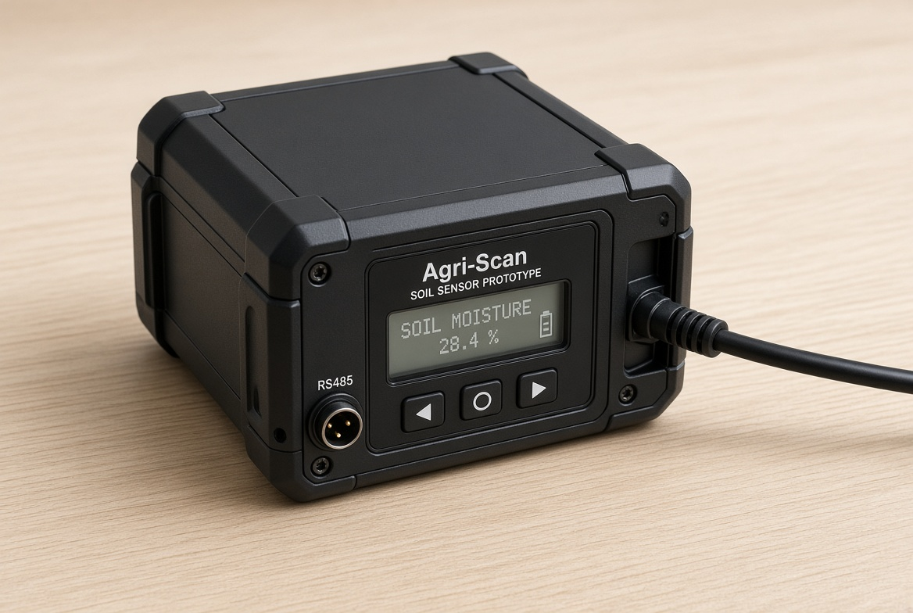
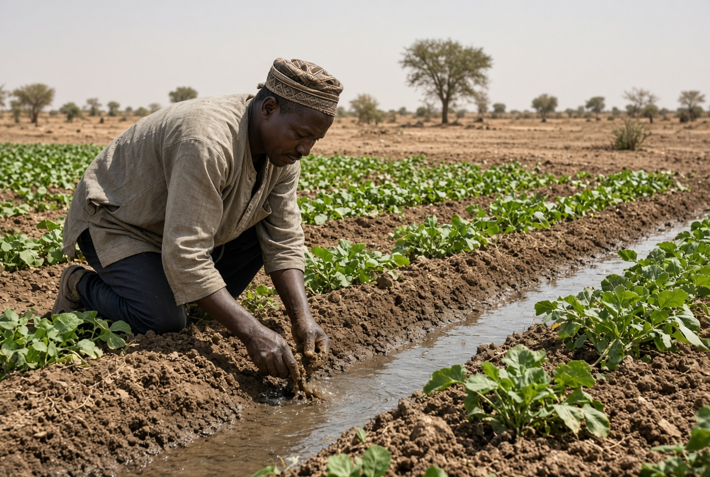
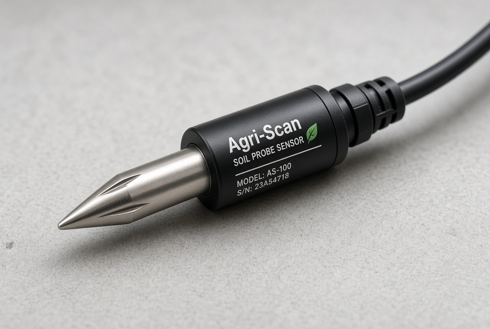
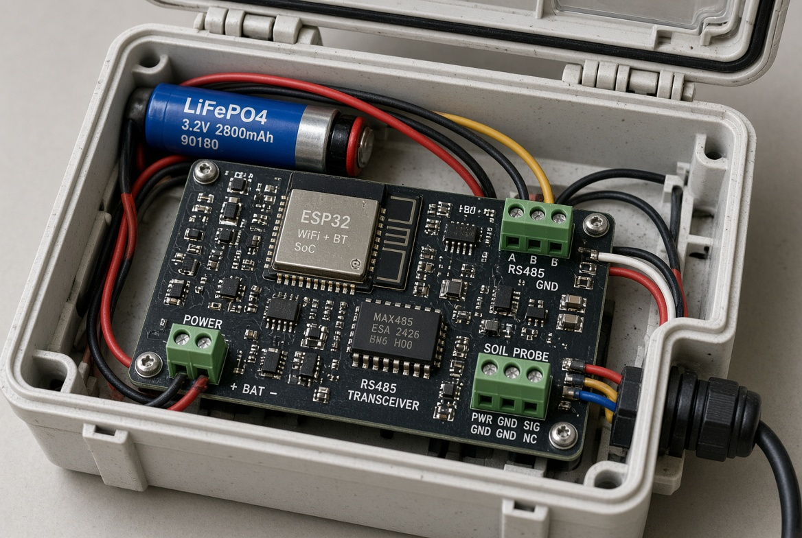
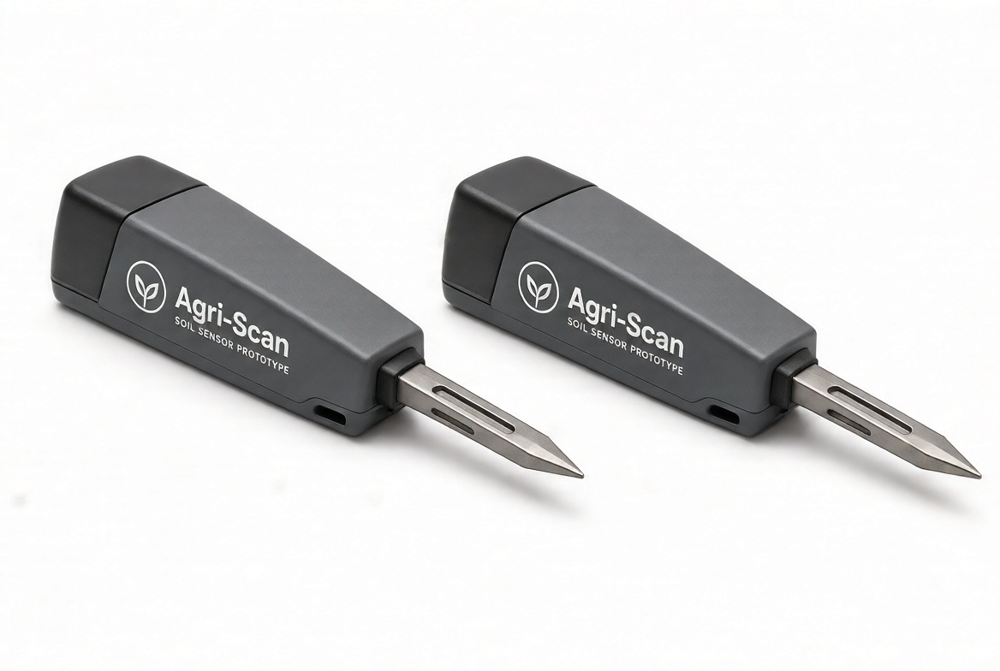
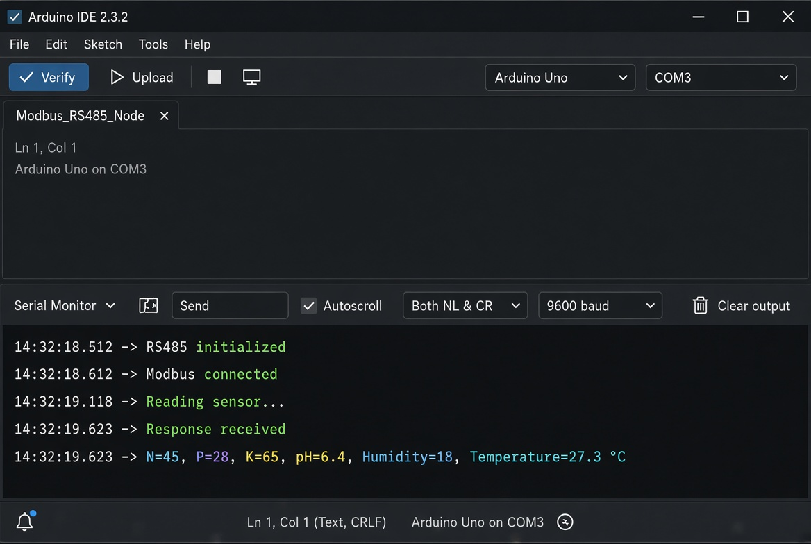
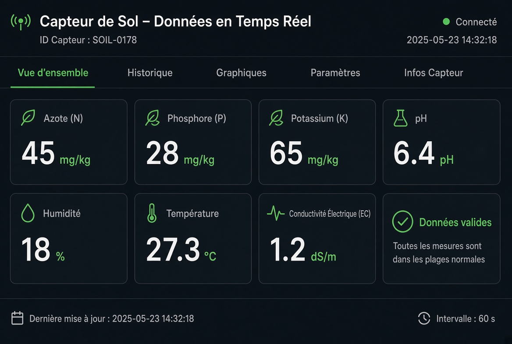
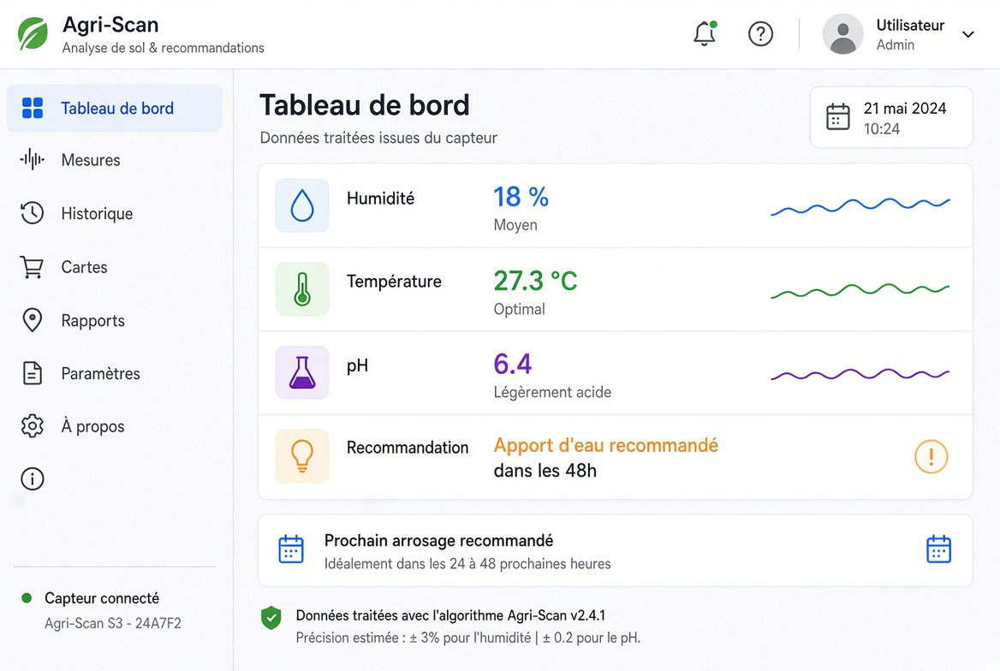

01
Mesure physico-chimique
La sonde permet l'analyse simultanée de l'azote (N), du phosphore (P), du potassium (K), du pH, de l'humidité, de la température et de la conductivité électrique (EC).
Agri-Scan Elite est une sonde électronique portable d'analyse de sol conçue pour faciliter la mesure des principaux paramètres physico-chimiques du sol et orienter les décisions agricoles dans les contextes où l'accès aux laboratoires reste limité.

Prototype Agri-Scan Elite — AfriSyx Labs.
Dans plusieurs zones agricoles du Tchad, notamment autour du lac Tchad, du Chari-Baguirmi et du Moyen-Chari, les décisions relatives aux engrais et à l'irrigation peuvent être prises sans diagnostic physico-chimique accessible sur le terrain.
Pour de nombreux petits exploitants, l'accès aux laboratoires d'analyse de sol à N'Djamena peut être difficile en raison des coûts, des délais et de la distance.
Sans données sur les propriétés du sol, le choix et la quantité d'engrais peuvent reposer davantage sur des pratiques empiriques.
Dans les zones soumises aux sécheresses ou à la salinisation, disposer de données sur l'humidité et la conductivité du sol peut contribuer à mieux orienter l'irrigation.

Agri-Scan Elite est conçue et assemblée au Tchad pour permettre une acquisition instrumentée des données du sol directement sur le terrain.
La sonde permet l'analyse simultanée de l'azote (N), du phosphore (P), du potassium (K), du pH, de l'humidité, de la température et de la conductivité électrique (EC).
Les données sont acquises par un microcontrôleur ESP32 communiquant avec la sonde via le protocole industriel Modbus RS485.
Le logiciel traite les métriques mesurées afin de générer une information exploitable pour orienter les décisions relatives à l'eau et à la fertilité.
L'architecture prévoit une restitution des résultats par des canaux accessibles, notamment SMS/USSD, afin de limiter la dépendance à une connexion Internet haut débit.
L'objectif est de transformer une mesure brute du sol en une information courte et exploitable par les acteurs agricoles.
La sonde acquiert les paramètres physico-chimiques du sol via une communication Modbus RS485.
Le système prépare les données pour leur transmission par les canaux prévus dans l'architecture, notamment HTTP ou SMS.
Le logiciel traite les mesures afin de produire une information directement exploitable pour l'eau et la fertilité.
Le résultat peut prendre la forme d'une instruction courte, adaptée à un usage terrain et à des téléphones peu performants.

Le dispositif combine acquisition instrumentée, électronique basse consommation et traitement logiciel pour fonctionner dans des environnements où l'autonomie et la connectivité doivent être prises en compte.
Microcontrôleur basse consommation chargé de piloter l'acquisition et le traitement des données.
Interface utilisée pour communiquer avec la sonde via le protocole industriel Modbus.
Batterie prévue pour l'alimentation du dispositif et associée à une gestion énergétique adaptée au terrain.
Module de charge solaire intégré à l'architecture pour favoriser l'autonomie lors des usages prolongés.
Mode de veille profonde destiné à réduire la consommation énergétique du système.
Traitement des métriques, génération de recommandations et préparation des données pour leur restitution.

Agri-Scan Elite est actuellement au stade de prototype fonctionnel hardware et software. Cette section privilégie les preuves techniques plutôt que les promesses.




Une démonstration vidéo du prototype et de son fonctionnement.
La vidéo ne s'affiche pas ? Ouvrir la démonstration
Équiper leurs agents et permettre à plusieurs membres de partager l'utilisation d'un même dispositif de mesure.
Mettre l'outil à disposition des techniciens et agents d'encadrement agricole intervenant directement sur le terrain.
Mieux documenter l'état du sol pour orienter les décisions relatives aux apports en nutriments.
Utiliser les données d'humidité et de conductivité pour contribuer à une gestion plus ciblée de l'irrigation.
Réduire les dépenses inutiles en intrants grâce à une meilleure information sur les besoins du sol.
Rendre la donnée plus accessible dans des environnements où Internet haut débit et smartphones performants ne sont pas toujours disponibles.
Vente directe des dispositifs Agri-Scan Elite aux ONG, projets de développement et coopératives au Tchad.
Abonnement pour le suivi périodique des sols et l'accès à des services de données et à un tableau de bord destiné aux structures d'encadrement.
Agri-Scan Elite est un prototype tchadien combinant électronique, acquisition de données et traitement logiciel pour rapprocher l'analyse du sol des acteurs agricoles.
Explorer le projet sur GitHub